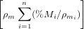
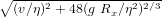

An R package for statistical provenance analysis
Abstract
This paper introduces provenance, a software package within the statistical programming environment R, which aims to facilitate the visualisation and interpretation of large amounts of sedimentary provenance data, including mineralogical, petrographic, chemical and isotopic provenance proxies, or any combination of these. provenance comprises functions to: (a) calculate the sample size required to achieve a given detection limit; (b) plot distributional data such as detrital zircon U-Pb age spectra as Cumulative Age Distributions (CADs) or adaptive Kernel Density Estimates (KDEs); (c) plot compositional data as pie charts or ternary diagrams; (d) correct the effects of hydraulic sorting on sandstone petrography and heavy mineral composition; (e) assess the settling equivalence of detrital minerals and grain-size dependence of sediment composition; (f) quantify the dissimilarity between distributional data using the Kolmogorov-Smirnov and Sircombe-Hazelton distances, or between compositional data using the Aitchison and Bray-Curtis distances; (e) interpret multi-sample datasets by means of (classical and nonmetric) Multidimensional Scaling (MDS) and Principal Component Analysis (PCA); and (f) simplify the interpretation of multi-method datasets by means of Generalised Procrustes Analysis (GPA) and 3-way MDS. All these tools can be accessed through an intuitive query-based user interface, which does not require knowledge of the R programming language. provenance is free software released under the GPL-2 license and will be expanded based on user feedback.
keywords: provenance – statistics – U-Pb – zircon – heavy minerals – petrography – geochemistry
1 Introduction
Sedimentary provenance analysis, in which chemical, mineralogical and isotopic properties of siliciclastic sediments are used to trace the flow of sand (or silt) through a sediment routing system, has entered an era of ‘Big Data’ (Vermeesch and Garzanti, 2015). Thanks to technological improvements, it is now common practice to analyse thousands of grains in dozens of samples. These large datasets can be prohibitively difficult to interpret without statistical aids. Over the past few years, sedimentary geologists and geochronologists have developed a plethora of methods to address this issue, which are scattered in many different places and implemented in a variety of different software environments (e.g., Ludwig, 2003; Marshall, 1996; Sircombe and Hazelton, 2004; Sircombe, 2004; Resentini et al., 2013; Templ et al., 2011; van den Boogaart and Tolosana-Delgado, 2008; Vermeesch, 2004, 2012, 2013; Vermeesch and Garzanti, 2015). This paper aims to group some of the most useful tools under a common umbrella, the provenance package. The various sections of this article are arranged in order of increasing complexity and dimensionality, using a published dataset from Namibia for examples (Section 2).
Section 3 covers some functions that deal with a single provenance proxy applied to a single sample of sediment. This includes sample size calculations (Section 3.1) and functions to plot detrital age distributions as Kernel Density Estimates and Cumulative Age Distributions (Section 3.2). Sections 3.3 and 3.4 show how the effects of selective entrainment of dense minerals can be undone and how mineralogical and petrographic provenance proxies are affected by hydraulic sorting. Section 4 introduces Principal Component Analysis and Multidimensional Scaling as dimension reducing techniques which facilitate the interpretation of multi-sample datasets analysed by a single method. This Section also presents a brief overview of different approaches to quantify the ‘dissimilarity’ between distributional and compositional data. Finally, section 5 covers functionality to combine large datasets comparing multiple samples analysed with multiple methods, using Procrustes analysis and 3-way Multidimensional Scaling. The various functions in this paper are illustrated with many code snippets. Further examples are provided at http://provenance.london-geochron.com and in the built-in documentation. To run these examples and use the provenance package, one should first install R. This is an increasingly popular programming environment similar in scope and purpose to Matlab, which is available free of charge on any operating system at http://r-project.org. The actual package can then be installed by typing
at the command prompt. Once installed, the package can be loaded by typing
The easiest way to use provenance is by typing:
which brings up a query-based user interface, removing the need to master the syntax of the R programming language (Figure 1). The provenance() user interface is self explanatory and won’t be discussed further in this paper. Instead, the different tools within the provenance package will be illustrated with short code snippets which more advanced users may incorporate in their own R scripts for enhanced flexibility and automation. Internal documentation of these functions can be accessed through the ? command. For example, to display the documentation for the procrustes function (Section 5):
{kind=link}
2 Data handling
Over the years, geologists have tried and tested literally dozens of provenance proxies (e.g., Basu and Molinaroli, 1989; Matter and Ramseyer, 1985; Morton, 1985; Owen, 1987; Renne et al., 1990; Hurford and Carter, 1991; McLennan et al., 1993; Vermeesch and Garzanti, 2015). Most of these can be diviced into two broad classes:
- distributional data cover single-mineral proxies such as detrital zircon U-Pb or mica 40Ar/39Ar ages, in which samples can be summarised as lists of ordinal values.
- compositional data cover multi-mineral proxies such as petrography, heavy mineral analysis and bulk geochemistry, in which samples can be summarised as one-way tables in which each row can be (re)normalised to unity.
provenance reads raw data as .csv files and casts these into two classes by separate functions. For example:
HM <- read.compositional(HM.fname.csv)
Here DZ.fname.csv and DZ.err.fname.csv stand for the file names of some U-Pb age data and their analytical uncertainties (where the latter argument is optional). Different columns of these files correspond to different samples, with the rows containing the numerical values of the single grain analyses. HM.fname.csv stands for the file name of a heavy mineral dataset, stored as a table with samples arranged by row and each column corresponding to a different type of mineral. The data objects produced by the two read functions are treated differently by all subsequent functions.
2.1 Built-in datasets
To illustrate provenance’s functionality, the package is bundled with a published dataset from Namibia (Vermeesch and Garzanti, 2015). Entering
loads a variable called Namib into memory, which is comprised of one distributional and five compositional datasets: (1) Namib$DZ contains the zircon U-Pb ages and their analytical uncertainties; (2) Namib$PT the bulk petrography; (3) Namib$HM the heavy mineral compositions less the opaque minerals; (4) Namib$PTHM the combined petrography and heavy minerals, including micas and opaque minerals, normalised to unity; (5) Namib$Major the major element composition of the bulk sediment; and (6) Namib$Trace the trace element composition of the bulk sediment. To avoid having to repeatedly type the preamble Namib$, we can attach the dataset to the search path:
After which we can access its data members as DZ, PT etc. Additionally, provenance also includes a table of mineral and rock densities (densities) as well as the petrographic/mineralogical end-member compositions (endmembers) of various tectonic settings which will be used to evaluate the settling equivalence of detrital components (Section 3.4). Also these two datasets can be loaded with the data function:
The built-in datasets are based on the following ten files: DZ.csv, DZ.err.csv, PT.csv, HM.csv, PTHM.csv, Major.csv, Trace.csv, densities.csv and endmembers.csv. The system paths of these files can be retrieved as follows:
Further details about these datasets can be obtained from the built-in help functions ?Namib, ?densities and ?endmembers.
2.2 Basic data manipulation
provenance includes a number of basic operations to query and manipulate the large datasets contained within distributional and compositional data objects. For example, to extract the coastal samples of the Namibian geochronology and heavy mineral datasets:
coast.DZ <- subset(DZ,select=coast.samples)
coast.HM <- subset(HM,select=coast.samples)
For compositional data, the subset function also allows the user to extract subcompositions. For example, to extract the zircon, tourmaline and rutile content of all samples in the heavy mineral dataset:
Of course, both options can also be combined:
which returns the zircon, tourmaline and rutile contents of the coastal samples alone. For compositional data, it is often useful to add several components together, an operation which is referred to as ‘amalgamation’ (Aitchison, 1986). This is useful for removing missing components (‘zero counts’) prior to logratio analysis (Section 4.2). For example, to extract the QFL (Quartz – Feldspar – Lithics) composition from the petrographic dataset by amalgamation:
where KF and P stand for K-feldspar and plagioclase, and Lm, Lv and Ls refer to the lithic fragments of metamorphic, volcanic and sedimentary origin respectively. In the special case of a three component system, amalgamation can also be achieved by a different function:
This produces an object of class ternary which is handled by a special, overloaded version of the plot function (Section 3.2). The statistical field of compositional data analysis is very rich, and provenance does not attempt to cover all but its most basic operations. The user is referred to other R packages such as compositions (van den Boogaart and Tolosana-Delgado, 2008) and robCompositions (Templ et al., 2011) for a more comprehensive toolset. Three functions are provided to facilitate the interaction between provenance and these other packages. as.acomp and as.data.frame convert compositional datasets to objects of class acomp and data.frame, for use in robCompositions and compositions, repectively. For example:
PT.data.frame <- as.data.frame(PT) # can be used in 'robCompositions'
Conversely, the as.compositional function translates acomp or data.frame objects to compositional data for use in provenance. For example, using the Kongite and skyeLavas datasets which are built into compositions and robCompositions:
data(Kongite)
Kongite.comp <- as.compositional(Kongite)
library(robCompositions)
data(skyeLavas)
skyeLavas.comp <- as.compositional(skyeLavas)
where Kongite.comp and skyeLavas.comp can be further analysed by the functions described later in this paper.
3 Functions applying to a single sample
3.1 Sample size calculations
On the most basic level, provenance analysis requires the geologist to identify certain properties in a representative number of grains from each sample. The question then arises how many grains constitute a ‘representative’ number of grains. The answer to this question depends on the geological problem of interest. If the main purpose of the study is merely to characterise the general shape of the distribution (e.g., ‘young’ vs. ‘old’ or ‘narrow’ vs. ‘wide’), then a few dozen grains may be enough (Avdeev et al., 2011). If instead one is looking for a particular component comprising, say, a fraction f=1/N of the total population (where N is an integer denoting the number of fractions), then the likelihood of missing this fraction is given by (1 − f)n, where n is the number of grains (Dodson et al., 1988). Finally, if, we are interested in collecting all fractions of a sample (Vermeesch, 2004), then the likelihood of missing any of them is given by
|
| (1) |
where (N i ) is the Binomial coefficient. To calculate the probability that at least one 10% fraction is missing from a 60-grain sample in provenance:
Conversely, to estimate the largest fraction (f) which one can be 95% confident not to have missed in the same 60-grain sample:
Finally, to compute the number of grains needed to be 95% certain that no fraction greater than 5% of the total population is missed:
which is 117 (Vermeesch, 2004).
3.2 Plotting individual samples
The geologically meaningful information carried by distributional data does not so much lie in their values as, like their name suggests, in their distribution. A first step towards interpreting such data in provenance is to plot them as either cumulative or density plots. To illustrate this, consider an infinite population characterised by a uniform distribution between 100 and 110 Ma. Plotting an infinite number of values collected from this population on a histogram with infinitessimal binwidth yields a simple step function (red line in Figure 2.a). This is the probability density function of the population. The corresponding cumulative distribution (red line in Figure 2.b) is a straight line rising from 0 at 100 Ma (0% of the population falls below 100 Ma) to 1 at 110 Ma (100% of the population falls below 110 Ma). Of course, in real life geologists never have the luxury of exhaustively collecting an entire population. Instead, they must work with a representative subset of that population, the sample. Suppose that we have collected a random sample of 100 values from our uniform population (black ticks on Figure 2.a). Further suppose that these values are analysed with infinite analytical precision. From this sample of random values, we cannot reconstruct the step function. Instead, the density must be estimated using histograms or kernel density estimates (KDEs). For a sample of limited size, these estimates never exactly agree with the true age distribution, but are smooth approximation thereof (black line in Figure 2.a). In contrast, the Empirical Cumulative Distribution Function (ECDF, a.k.a. ‘Cumulative Age Distribution’ or CAD in a geochronological context, Vermeesch, 2007) is a method to visualise distributional datasets without the need for any smoothing. Let x = {x1,x2,...,xn} be a sample of distributional data, then the cumulative distribution Fx is defined as follows:
|
| (2) |
where ‘#x ≤ t’ stands for “the number of items in x that are smaller than or
equal to t”. In contrast with density estimates, CADs do not suffer from
oversmoothing (Figure 2.b). Despite this significant advantage of CADs over KDEs,
the latter are still preferred by many practitioners of detrital geochronology because
they are more intuitive to interpret.
In real life, analytical precision is never infinite, but measured ages are offset from
their true values by some experimental error. Suppose that this error is characterised
by a Normal distribution with standard deviation σ = 2 Ma. Convolution of the error
distribution with the uniform distribution of the true ages yields a smooth
probability density function which spreads into values beyond the 100-110 Ma
interval (red line in Figure 2.c). The corresponding cumulative distribution rises
gently from 0 at ∼95 Ma (0% of the distribution falls below 95 Ma) to 1
at ∼115 Ma (100% of the distribution falls below 115 Ma), with a linear
section in between (red line in Figure 2.d). Like before, the KDE of the
measurements (black line in Figure 2.c) oversmooths the theoretical probability
density function (red line). And like before, the correponding CAD (black
line in Figure 2.d) does not suffer from this problem. Note that Probability
Density Plots (PDPs), which are a popular way to account for the variable
precision of detrital data by using the analytical uncertainty as a bandwidth
estimator (Ludwig, 2003; Sircombe, 2004) unfortunately suffer from significant
levels of undersmoothing for small datasets and oversmoothing for large
datasets (Vermeesch, 2012). For this reason, PDPs are not implemented in
provenance.
{kind=link}
In provenance, CADs are obtained using an overloaded plot function. For example, for detrital zircon U-Pb sample N1 (Figure 3a):
Both histograms and KDEs are implemented in standard R as the hist and density functions, respectively. These built-in functions work very well for relatively simple, unimodal distributions (Silverman, 1986). However, the distributions occurring in detrital geochronology tend to be more complex than that, causing the density function to overestimate the kernel bandwidth and oversmooth the resulting distribution. For this reason, the provenance package includes a separate function for kernel density estimation using a hybrid adaptive kernel density algorithm, adopted from DensityPlotter (version 3.0 and above, Vermeesch, 2012). This algorithm consists of two steps. First, the fixed bandwidth algorithm by Botev et al. (2010) is used to calculate a ‘pilot’ density. Then, the bandwidth is adjusted at each sample point to scale with the square root of the local density, normalised by the geometric mean of the entire distribution (Abramson, 1982). Thus, the fixed bandwidth estimate is converted into an adaptive density estimate, which assigns a narrower bandwidth to densely sampled segments of the age distribution and a wider bandwidth to those segments which are sparsely sampled. This increases the resolution of the density estimates where sufficient data are available, whilst smoothing out those parts with insufficient data. As an example, the following code plots the U-Pb age distribution of sample N1 from the Namibian dataset with the default settings (Figure 3b):
dens <- KDE(N1) # create the density estimate
plot(dens) # plot the density estimate
The appearance of the plot can be changed by modifying the optional arguments. The following example plots the data on a logarithmic scale from 10 to 3,000 Ma with a fixed bandwidth of 50 Ma and turns off the sample point indicators on the x-axis (Figure 3c):
plot(dens,pch=NA ) # pch = the symbol used for the sample points
provenance also includes some basic functionality to plot compositional data on ternary diagrams. For example, to plot the petrography of the Namib dataset on Dickinson et al. (1983)’s QFL diagram (Figure 3d):
where QFL.tern was produced by the ternary() function (Section 2.2). The graphical output can be saved as a vector-editable PDF for further processing in software such as Adobe Illustrator©, CorelDraw© or Inkscape:
{kind=link}
3.3 The SRD correction: a simple way to correct for environmental bias
To facilitate the comparison of detrital modes for provenance analysis or
stratigraphic correlation, we need to first remove the often significant compositional
differences among sediment samples that are caused by hydrodynamic processes in
the depositional environment. Intersample modal variability can be corrected for by a
simple principle. In the absence of provenance changes and environmental bias, the
weighted average Source Rock Density (SRD) of terrigenous grains should be equal,
for each sample and each grain-size class of each sample, to the weighted average
density of source rocks. By correcting relative abundances of detrital minerals in
proportion to their densities, we can restore the appropriate SRD index for any
provenance and subprovenance type in each sample or grain-size class (Garzanti
et al., 2009). Modal variability is effectively reduced by this procedure, which can be
applied confidently to modern sediments deposited by tractive currents in any
environment. Good results are obtained even for placer sands and finest grain-size
fractions where heavy-mineral concentration is strongest. Such ‘SRD correction’ also
successfully compensates for biased narrow-window modes, thus providing a
numerical solution of general validity to the problem of environmental bias in
sedimentary petrology.
The SRD index, used to assess average density of source rocks in the absence of hydrodynamic effects or to detect hydraulic-controlled concentration of denser minerals, is defined as the weighted average density of terrigenous grains (spurious and intrabasinal particles such as bioclasts are neglected in the calculation; Garzanti and Andò, 2007):
|
| (3) |
where %m and %M are the volume and weight percentages of mineral m, and ρm its density. In order to compensate for selective-entrainment effects, we must recalculate detrital modes for each sample until the same SRD index is restored for each. The mathematical procedure is similar to that used to convert volume percentages to weight percentages, and vice-versa:
| %M | = %m ρm∕SRD = %m ρm∕∑ i=1n(%m i ρmi) | (4) |
| %m | = %M SRD∕ρm = %M∕ | (5) |
The ‘SRD correction’ assumes the form of Equation 4 for heavy-mineral-poor samples:
|
| (6) |
and the form of Equation 5 for heavy-mineral-rich samples:
|
| (7) |
To remove environmental bias by the SRD correction we need to assume an appropriate common SRD value for all samples. Such a value may be determined empirically, by averaging SRD indices of ‘normal’ samples with the same provenance. Or we may proceed in reverse, and find through successive approximations the SRD value which minimizes the residual variance in the data set. In any case, we need criteria to tell us which SRD value is appropriate and which should be considered anomalous. In the absence of hydrodynamic effects, the SRD index faithfully reflects the average density of source rocks (Garzanti et al., 2006). With the exception of less dense glass-rich volcanic and porous sedimentary rocks, and of denser mafic and ultramafic rocks, rocks densities typically lie in the 2.6-2.8 g/cm3 range (Daly et al., 1966). Therefore, besides monogenic detritus supplied locally by specific rock types (e.g., ignimbrite, gypsum, gabbro, peridotite, granulite, eclogite), SRD indices of homogenized detritus derived long-distance from diverse crustal sources must lie in a narrow range (2.70 ± 0.05). Given the regional geology and geomorphology of southern Africa, we can confidently rule out exotic compositions and safely assume an SRD of ∼ 2.71. Restoring all samples from the Namib dataset to this reference value:
HMcomp <- c("zr","tm","rt","sph","ap","ep","gt","st","amp","cpx","opx")
PHO <- amalgamate(rescomp,Plag="P",HM=HMcomp,Opq="opaques")
plot(ternary(PHO),showpath=TRUE)
where HMcomp is a list of heavy minerals and amcomp amalgamates the restored PTHM composition to the reference SRD density. Setting showpath=TRUE in the overloaded plot function displays the intermediate steps of the iterative SRD correction algorithm on the ternary diagram. In the above example, plagioclase, the amalgamated transparent heavy minerals and the opaque minerals are plotted together because they cover a wide range of densities (2.67, ∼3.5 and 5 g/cm3, respectively). For the Namib dataset, the correction path clearly shows that samples N8 and N9 are most strongly affected by the SRD correction and, hence, hydraulic sorting effects. This is entirely consistent with the interpretations of Garzanti et al. (2012), Vermeesch and Garzanti (2015), and Section 5. Finally, to illustrate the combined use of provenance with the compositions package, the following code adds an ellipse from the mean and the variance to the SRD-corrected data, using the compositions package’s ellipses function:
ellipses(mean(PHO.acomp),var(PHO.acomp),r=2)
{kind=link}
3.4 Size-density sorting of detrital grains and intrasample variability
The settling velocity of a detrital particle represents the balance between gravitational forces and drag resistance due to both turbulence and viscosity. Settling of clay and silt particles in water is resisted by viscosity, whereas turbulence is the dominant drag component during settling of pebbles or in air. Different empirical formulas have been proposed to model settling of particles by tractive currents, accounting for the wide range of grain sizes displayed by sedimentary deposits and their diverse depositional facies (aeolian vs. fluvial vs. marine). The settling velocity of clay and silt particles can be calculated by Stokes’ Law:
|
| (8) |
where g is the gravitational constant, Rx is the submerged density (ρgrain-ρfluid), Dx is the diameter of the particle, and η is the fluid viscosity. The settling velocity of sand-sized particles in water must be calculated by empirical formulas, such as the relatively simple one proposed by (Cheng, 1997):
|
| (9) |
The settling velocity of granules and pebbles can be described by Newton’s Impact Law:
|
| (10) |
where ρf is the fluid density. The same formula has been shown empirically to be sufficiently accurate also to calculate the settling of particles of any grain size in air (Garzanti et al., 2008). These three formulas allow us to calculate the difference in nominal diameter (the ‘size shift’, SS) between two settling-equivalent particles for any size, in any transporting medium, and usually referred to quartz. For clay and silt particles, size shifts between any mineral x and a reference mineral or the bulk sediment are calculated as:
|
| (11) |
For sand sized particles:
|
| (12) |
where Ξ = v∕η + . For granules and pebbles or any sediment settling in air, size shifts are twice those predicted by Stokes’ Law:
|
| (13) |
The average settling velocity for each given sediment sample can be calculated
with formulas 8, 9 or 10 according to its mean grain size, grain density (SRD index of
the bulk sediment, see Section 3.3) and depositional environment (air, freshwater or
seawater). For each detrital mineral or rock fragment, the size shift referred to the
bulk-sediment (SRD index) is calculated with formulas 11, 12 or 13. To
account for shape effects (Komar et al., 1984), the density of micas is lowered
by 0.5 g/cm3 (Garzanti et al., 2008). Finally, a Gaussian size-frequency
distribution is calculated for each detrital component by combining its size shift
referred to the mean size of the bulk sediment and the sorting value of the
latter.
In provenance, all these calculations are performed by the minsorting function, so named after the spreadsheet application of Resentini et al. (2013) on which it is based. To illustrate the use of the minsorting function, the following code snippet applies it to one of the end-member compositions included with the package, assuming a mean grain size of (Krumbein) Φ=2 and standard deviation Φ=1:
distribution <- minsorting(endmembers,densities,sname='ophiolite',
phi=2,sigmaphi=1,medium="seawater",by=0.05)
plot(distribution,components=c('F','px','opaques'))
Which yields the grain size distribution of feldspar, pyroxene and opaque minerals (in 0.05 Φ intervals), so chosen because of the great contrast in density between them (Figure 5). When - as is commonly done in geochronological analysis - one specific mineral is targeted (e.g., apatite or zircon), we can use such information to choose the most suitable size window for laboratory treatment and analysis, and thus obtain a most faithful characterization of the sediment sample.
{kind=link}
4 Jointly considering multiple samples
provenance allows multiple samples to be plotted together. For example, to plot all 16 detrital age distributions from the Namibian dataset on a scale from 0 to 3,000 Ma in four columns:
summaryplot(UPb,ncol=4)
where the normalise flag sets the area under each of the KDEs to the same value. The resulting plot contains 16 kernel density estimates, resulting in 16 × 15 / 2 = 120 pairwise comparisons (Figure 6). The first step towards simplifying this multi-sample comparison problem is to convert the raw data into a table of pairwise distances. This can be achieved using a number of different dissimilarity measures.

4.1 Dissimilarity measures
A crucial first step towards simplifying the interpretation of multi-sample datasets is to replace the visual comparison of age distributions, histograms and pie charts with numerical values expressing the ‘dissimilarity’ between samples. For distributional data, the default method is the Kolmogorov-Smirnov (K-S) statistic (δABks), which uses the maximum absolute difference between two cumulative distributions (Feller, 1948). Given two samples A and B, the K-S distance is defined as
|
| (14) |
where FA and FB are defined by Equation 2 and |⋅| stands for the absolute value. One nice feature of the K-S distance is that it obeys the triangle inequality, which states that, for any three samples A, B and C, the distance between A and C is less than or equal to the distance between A and B plus the distance between B and C. The triangle inequality makes the K-S distance behave like the physical distances which we are familiar with in the real world. On the other hand, the K-S statistic also has limitations, such as its inability to take into account the effect of unequal analytical uncertainties. This makes it difficult to objectively compare samples acquired on different mass spectrometers characterised by differing analytical precision. This problem was addressed by Sircombe and Hazelton (2004) using the squared overlap between so-called Kernel Functional Estimates (KFEs):
|
| (15) |
where fA and fB are the KFEs of samples A and B. KFEs are a special type of KDEs, in which a variable degree of deliberate oversmoothing is applied to the different samples to account for the differing analytical uncertainties between them (Sircombe and Hazelton, 2004). Although KFEs are useful as a point of comparison between different samples, they have limited value as a data visualisation tool due to the oversmoothing. To use the S-H dissimilarity, the user needs to supply the analytical uncertainties in a separate .csv file. The following code demonstrates the calculation of K-S and S-H dissimilarities in provenance:
SH.diss <- diss(DZ,method='SH')
For compositional proxies such as petrographic, heavy mineral or chemical data, provenance provides a further two dissimilarity measures. If the dataset is free of zero values, Aitchison’s central logratio distance is used by default:
|
| (16) |
where ‘g(x) stands for ‘the geometric mean of x (Aitchison, 1986; Vermeesch, 2013). Note that the same distance is obtained irrespective of whether the input data are expressed as fractions or percentages. The Aitchison distance breaks down for datasets comprising ‘zero counts’ (Ai = 0 or Bi=0 for any i). This problem can be solved by pooling several categories together (see Section 2.2), or by using a different dissimilarity measure such as the Bray-Curtis distance:
|
| (17) |
The following example yields the dissimilarity matrices of the heavy mineral and major element compositions using the Bray-Curtis and Aitchison measures, respectively:
Major.diss <- diss(Major,method='aitchison')
4.2 Principal Component Analysis and Multidimensional Scaling
Although the dissimilarity matrices introduced in the previous section make the comparison of two samples more objective, it remains difficult to discern any meaningful patterns in large numbers of such pairwise comparisons. Multidimensional Scaling (MDS) is a dimension-reducing technique which can make the comparison of multiple samples more objective (Borg and Groenen, 2005). MDS is widely used in other scientific disciplines and can easily be adapted for provenance studies (Vermeesch, 2013). Given a table of pairwise distances between samples, MDS produces a configuration of points in which similar samples plot close together and dissimilar samples plot far apart. provenance implements both classical MDS, in which the physical distances between the different points in the MDS configuration are directly proportional to the dissimilarities between the corresponding samples; and nonmetric MDS, which merely aims to reproduce the relative ranks of the dissimilarities (Borg and Groenen, 2005). In the latter case, provenance allows the user to graphically assess the goodness of fit by plotting the dissimilarities against the fitted distances on a so-called ‘Shepard Plot’ (Kruskal and Wish, 1978). provenance uses nonmetric MDS by default because it produces better fits than classical MDS and accepts a wider range of dissimilarity measures (Kruskal and Wish, 1978; Borg and Groenen, 2005). The MDS function accepts as input either data of class compositional or distributional, or a dissimilary matrix (class diss). The following two lines of code are therefore equivalent to each other:
MDS.DZ.2 <- MDS(diss(DZ))
In contrast with nonmetric MDS, classical MDS can only be used for dissimilarity measures are proper distances and therefore fulfil the triangle inequality (Borg and Groenen, 2005), which is the case for the Kolmogorov-Smirnov and Aitchison distances. For example, using the latter dissimilarity measure, the major element composition can be plotted as a classical MDS configuration:
MDS.Major <- MDS(Major.diss,classical=TRUE)
plot(MDS.Major,xaxt='s',yaxt='s')
Where the xaxt and yaxt flags add tick marks and labels to the x and y axes (these are turned off by default). By definition, the Aitchison distance does not only fulfil the triangle inequality but is a Euclidean distance as well. In this case, MDS is equivalent to Principal Component Analysis (PCA, Aitchison, 1983; Cox and Cox, 2000). This equivalence can be demonstrated by the fact that:
plot(PCA.Major)
produces identical output as the previous code snippet (Figure 7). The main advantage of PCA over MDS is that it can be visualised as a ‘biplot’, in which the configuration is accompanied by a set of vector ‘loadings’ showing the relationship between the categorical input variables (Figure 7.b). Thus, the PCA biplot facilitates the interpretation of the configuration in terms of underlying processes (Aitchison and Greenacre, 2002). In this respect, compositional biplots are similar to a 3-way extension of the MDS method called INDSCAL, which is discussed in the next section. One limitation of compositional PCA is its inability to handle datasets containing zero values, which is due to its dependence on logratios (see Section 4.1). Various ways have been proposed to deal with this problem (e.g., Martín-Fernández et al., 2003), but none of these are implemented in provenance (yet). Instead, the user is presented with two options. The zero-value problem can either be circumvented by employing non-metric MDS using the Bray-Curtis dissimilarity; or by resorting to the PCA functionality implemented in the compositions and robCompositions packages.
{kind=link}
5 Combining multiple methods in multiple samples
The entire 5-proxy dataset can be visualised together with the summaryplot command, producing a diagram with 16 KDEs and 64 pie charts:
Trace$colmap <- 'rainbow'
UPb <- KDEs(DZ,from=0,to=3000,normalise=TRUE)
summaryplot(UPb,HM,PT,Major,Trace,ncol=2)
Which assigns a different colour map to the pie charts of the petrographic and
trace element data from the default heat.colors. The summary plot manages to
squeeze 16,125 numerical values into a single diagram, which provides a good visual
illustration of the term ‘Big Data’, but is next to impossible to interpret
geologically. Using the methods introduced in Section 4, we can produce five MDS
maps and thereby facilitate the multi-sample comparison for each dataset
(Vermeesch and Garzanti, 2015). Unfortunately, the subtle differences between
these maps present a second type of multiple comparison problem, which
calls for second layer of statistical simplification. The provenance package
provides two alternative solutions for this: Procrustes analysis and 3-way
MDS.
Procrustes analysis is the process by which a combination of shape-preserving transformations is used to match the shape of one object with that of another. Generalised Procrustes Analysis (GPA) is a generalisation of this procedure to multiple objects. In a provenance context, GPA extracts a single ‘consensus’ view from a collection of MDS configurations, by rotating, reflecting and scaling them to minimise a least squares criterion (Gower, 1975; Vermeesch and Garzanti, 2015). The following code applies this method to the Namib dataset:
plot(proc)
GPA is a two step process, in which the individual datasets are first subjected to
an MDS analysis, and the resulting configurations are then transformed into a group
configuration. Alternatively, the same type of graphical output can be generated
in a single step, using the final technique discussed in this paper, 3-way
MDS.
As the name suggests, 3-way MDS is a generalisation of the methods discussed in Section 4.2 from two- to three-dimensional dissimilarity matrices. For the Namib dataset, the combination of 16 samples and 5 methods results in a dissimilarity matrix of size 15 × 15 × 5. There exist many types of 3-way MDS algorithms, the oldest and most widely used of which is called INdividual Differences SCALing (INDSCAL, Carroll and Chang, 1970). In contrast with 2-way MDS and GPA, INDSCAL produces not one but two pieces of graphical output: the ‘group configuration’ and the ‘source weights’. For the Namib dataset, the former reproduces the relative dissimilarities between the samples, whereas the latter displays the relationship between the provenance proxies (Vermeesch and Garzanti, 2015). This is similar in a way to the compositional biplots produced by PCA (Section 4.2), which simultaneously display the configuration of the samples and the relationship between the variables (e.g. minerals or chemical elements). In the case of INDSCAL, the ‘source weights’ quantify the relative importance attached by each of the data sources (i.e. provenance proxies) to the horizontal and vertical axis of the ‘group configuration’ (Carroll and Chang, 1970; De Leeuw and Mair, 2011; Vermeesch and Garzanti, 2015). In provenance:
plot(IND)
Note that the resulting group configuration (Figure 8.a) looks significantly different from that presented by Vermeesch and Garzanti (2015). This is due to an error in the original petrographic data table, which has been fixed in the present paper. The ‘source’ weights (Figure 8.b) show that the major and trace element compositions attach much greater weight to the horizontal axis of the group configuration than the other proxies. This is attributed to hydraulic sorting, which affects bulk compositions more than it does mineral separates (Vermeesch and Garzanti, 2015). This is entirely consistent with Figure 4, which showed that samples N8 and N9 are particularly affected by winnowing effects.
{kind=link}
Although, in principle, 3-way MDS yields more insightful output than GPA, in practice things do not always work out so well. The problem is that the output of INDSCAL is often very sensitive to subtle changes in the input data. For example, running INDSCAL on the same data as before, but using the S-H dissimilarity instead of the K-S distance for the DZ data and the Bray-Curtis distance instead of the Aitchison distance for the bulk chemistry results in a similar looking group configurations (Figure 8.c), but a significantly different subject weights (Figure 8.d).
Major$method <- "bray"
Trace$method <- "bray"
IND.SH <- indscal(DZ,HM,PT,Trace,Major)
plot(IND.SH)
It is therefore advisable not to overinterpret these weights, and thus in practice INDSCAL often does not outperform GPA as might be hoped.
6 Conclusions
It is increasingly being recognised that, in order to truly understand sediment routing
systems, the combination of multiple proxies teaches more than the sum of its parts
(Garzanti, 2015). This paper introduced an R package named provenance to
facilitate the joint interpretation of large datasets comprising many samples and
several provenance proxies. Technological advances such as fast scanning electron
microscopes (e.g, QEMSCAN, Allen et al., 2012) and high-throughput
LA-ICP-MS (e.g., Frei and Gerdes, 2009) promise to fully unlock the power of
multi-method provenance analysis and further increase the need for the ‘Big
Data’ analysis tools provided by provenance. Much work remains to be
done to extend the methods presented in this paper. One example is the
incorporation of dissimilarity measures to compare distributional data of higher
dimensionality, such as paired U-Pb ages and Hf- or O-isotopic compositions
(e.g., Owen, 1987). Another example is the introduction of weighted MDS
(de Leeuw and Mair, 2009) to handle, say, datasets containing samples of widely
different sizes.
We would like to conclude this paper with the advice not to rely exclusively on statistics for the interpretation of provenance data. It is our opinion that statistical provenance analysis should be used as a complement to rather than a substitute for expert geological knowledge. It is sometimes found that petrographic information, especially the composition of the lithic fragments, allows an experienced analyst to unequivocally constrain provenance with much greater confidence than any machine or computer algorithm (Garzanti, 2015). Like any ‘black box’ technique, statistical methods such as MDS or INDSCAL can easily be abused. By exhaustively going through all the options provided by provenance, it may be possible to ‘cherry pick’ a configuration that supports a pre-conceived model. Paraphrasing Andrew Lang, we would like to urge the user to resist the temptation of using provenance in the same way that a drunk uses lamp-posts – for support rather than illumination. It is important to keep in mind that good scientific practice involves testing and rejecting rather than ‘proving’ hypotheses (Popper, 1959). We hope that provenance will be used according to this philosophy, along with all the other techniques at the disposal of sedimentary geologist today.
Acknowledgments
The author would like to thank István Dunkl, Luca Caracciolo, Hilmar von Eynatten and Guido Meinhold for organising the 2014 Working Group for Sediment Generation workshop in Göttingen and inviting him to present the work behind the provenance package. This research was funded by NERC standard grant #NE/1009248/1 and ERC starting grant 259505 (‘KArSD’). Raimon Tolosana-Delgado and two anonymous reviewers are gratefully acknowledged for their critical but constructive comments which truly transformed the paper.
References
Abramson, I.S., 1982. On bandwidth variation in kernel estimates-a square root law. The Annals of Statistics , 1217–1223.
Aitchison, J., 1983. Principal component analysis of compositional data. Biometrika 70, 57–65. doi:10.1093/biomet/70.1.57.
Aitchison, J., 1986. The statistical analysis of compositional data. London, Chapman and Hall.
Aitchison, J., Greenacre, M., 2002. Biplots of compositional data. Journal of the Royal Statistical Society: Series C (Applied Statistics) 51, 375–392.
Allen, J.L., Johnson, C.L., Heumann, M.J., Gooley, J., Gallin, W., 2012. New technology and methodology for assessing sandstone composition: A preliminary case study using a quantitative electron microscope scanner (QEMScan). Geological Society of America Special Papers 487, 177–194.
Avdeev, B., Niemi, N.A., Clark, M.K., 2011. Doing more with less: Bayesian estimation of erosion models with detrital thermochronometric data. Earth and Planetary Science Letters 305, 385–395.
Basu, A., Molinaroli, E., 1989. Provenance characteristics of detrital opaque Fe-Ti oxide minerals. Journal of Sedimentary Research 59.
van den Boogaart, K.G., Tolosana-Delgado, R., 2008. ”Compositions”: a unified R package to analyze compositional data. Computers & Geosciences 34, 320–338.
Borg, I., Groenen, P.J., 2005. Modern multidimensional scaling: Theory and applications. Springer.
Botev, Z.I., Grotowski, J.F., Kroese, D.P., 2010. Kernel density estimation via diffusion. Annals of Statistics 38, 2916–2957.
Carroll, J.D., Chang, J.J., 1970. Analysis of individual differences in multidimensional scaling via an N-way generalization of Eckart-Young decomposition. Psychometrika 35, 283–319.
Cheng, N.S., 1997. Simplified settling velocity formula for sediment particle. Journal of hydraulic engineering 123, 149–152.
Cox, T.F., Cox, M.A., 2000. Multidimensional scaling. CRC Press.
De Leeuw, J., Mair, P., 2011. Multidimensional scaling using majorization: SMACOF in R. Department of Statistics, UCLA .
Dickinson, W.R., Beard, L.S., Brakenridge, G.R., Erjavec, J.L., Ferguson, R.C., Inman, K.F., Knepp, R.A., Lindberg, F.A., Ryberg, P.T., 1983. Provenance of North American Phanerozoic sandstones in relation to tectonic setting. Geological Society of America Bulletin 94, 222–235.
Dodson, M., Compston, W., Williams, I., Wilson, J., 1988. A search for ancient detrital zircons in Zimbabwean sediments. Journal of the Geological Society 145, 977–983. doi:10.1144/gsjgs.145.6.0977.
Feller, W., 1948. On the Kolmogorov-Smirnov limit theorems for empirical distributions. The Annals of Mathematical Statistics 19, 177–189.
Frei, D., Gerdes, A., 2009. Precise and accurate in situ U–Pb dating of zircon with high sample throughput by automated LA-SF-ICP-MS. Chemical Geology 261, 261–270.
Garzanti, E., 2015. From static to dynamic provenance analysis - sedimentary petrology upgraded. Sedimentary Geology (this issue).
Garzanti, E., Andò, S., 2007. Heavy-mineral concentration in modern sands: implications for provenance interpretation, in: Mange, M., Wright, D. (Eds.), Heavy Minerals in Use, Developments in Sedimentology Series 58. Elsevier, Amsterdam, pp. 517–545.
Garzanti, E., Andò, S., Vezzoli, G., 2008. Settling equivalence of detrital minerals and grain-size dependence of sediment composition. Earth and Planetary Science Letters 273, 138–151.
Garzanti, E., Andò, S., Vezzoli, G., 2009. Grain-size dependence of sediment composition and environmental bias in provenance studies. Earth and Planetary Science Letters 277, 422–432. doi:10.1016/j.epsl.2008.11.007.
Garzanti, E., Andò, S., Vezzoli, G., Lustrino, M., Boni, M., Vermeesch, P., 2012. Petrology of the Namib Sand Sea: Long-distance transport and compositional variability in the wind-displaced Orange Delta. Earth-Science Reviews 112, 173 – 189. doi:10.1016/j.earscirev.2012.02.008.
Gower, J.C., 1975. Generalized procrustes analysis. Psychometrika 40, 33–51.
Hurford, A.J., Carter, A., 1991. The role of fission track dating in discrimination of provenance. Geological Society, London, Special Publications 57, 67–78.
Komar, P.D., Baba, J., Cui, B., 1984. Grain-size analyses of mica within sediments and the hydraulic equivalence of mica and quartz. Journal of Sedimentary Research 54.
Kruskal, J.B., Wish, M., 1978. Multidimensional scaling. volume 07-011 of Sage University Paper series on Quantitative Application in the Social Sciences. Sage Publications, Beverly Hills and London.
de Leeuw, J., Mair, P., 2009. Multidimensional scaling using majorization: The R package smacof. Journal of Statistical Software 31, 1–30. URL: http://www.jstatsoft.org/v31/i03/.
Ludwig, K., 2003. Isoplot 3.00 – a user’s manual. Berkeley Geochronology Center Special Publication .
Marshall, D., 1996. TernPlot: An Excel spreadsheet for ternary diagrams. Computers & Geosciences 22, 697–699.
Martín-Fernández, J.A., Barceló-Vidal, C., Pawlowsky-Glahn, V., 2003. Dealing with zeros and missing values in compositional data sets using nonparametric imputation. Mathematical Geology 35, 253–278.
Matter, A., Ramseyer, K., 1985. Cathodoluminescence microscopy as a tool for provenance studies of sandstones, in: Provenance of arenites. Springer, pp. 191–211.
McLennan, S., Hemming, S., McDaniel, D., Hanson, G., 1993. Geochemical approaches to sedimentation, provenance, and tectonics. Geological Society of America Special Papers 284, 21–40.
Morton, A.C., 1985. A new approach to provenance studies: electron microprobe analysis of detrital garnets from Middle Jurassic sandstones of the northern North Sea. Sedimentology 32, 553–566.
Owen, M.R., 1987. Hafnium content of detrital zircons, a new tool for provenance study. Journal of Sedimentary Research 57.
Popper, K.R., 1959. The logic of scientific discovery. London: Hutchinson.
Renne, P.R., Becker, T.A., Swapp, S.M., 1990. 40Ar/39Ar laser-probe dating of detrital micas from the Montgomery Creek Formation, northern California: Clues to provenance, tectonics, and weathering processes. Geology 18, 563–566.
Resentini, A., Malusá, M.G., Garzanti, E., 2013. MinSORTING: An Excel© worksheet for modelling mineral grain-size distribution in sediments, with application to detrital geochronology and provenance studies. Computers & Geosciences 59, 90–97.
Silverman, B., 1986. Density Estimation for Statistics and Data Analysis. Chapman and Hall, London.
Sircombe, K.N., 2004. AgeDisplay: an EXCEL workbook to evaluate and display univariate geochronological data using binned frequency histograms and probability density distributions. Computers and Geosciences 30, 21–31. doi:10.1016/j.cageo.2003.09.006.
Sircombe, K.N., Hazelton, M.L., 2004. Comparison of detrital zircon age distributions by kernel functional estimation. Sedimentary Geology 171, 91–111. doi:10.1016/j.sedgeo.2004.05.012.
Templ, M., Hron, K., Filzmoser, P., 2011. robCompositions: an R-package for robust statistical analysis of compositional data. John Wiley and Sons.
Vermeesch, P., 2004. How many grains are needed for a provenance study? Earth and Planetary Science Letters 224, 441–451.
Vermeesch, P., 2007. Quantitative geomorphology of the White Mountains (California) using detrital apatite fission track thermochronology. Journal of Geophysical Research (Earth Surface) 112, 3004. doi:10.1029/2006JF000671.
Vermeesch, P., 2012. On the visualisation of detrital age distributions. Chemical Geology 312-313, 190–194. doi:10.1016/j.chemgeo.2012.04.021.
Vermeesch, P., 2013. Multi-sample comparison of detrital age distributions. Chemical Geology 341, 140–146.
Vermeesch, P., Garzanti, E., 2015. Making geological sense of ‘Big Data’ in sedimentary provenance analysis. Chemical Geology 409, 20–27.